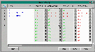

This menu contains all I/O and timers for each path or partial product path.
Click Here to see a screen shot of this menu. 
The fields are listed below:
Name - a description of a path or partial product pathGo - a boolean field handled automatically, displaying a 'Y' when the transfer is active and a 'N' when inactive
Product INPUT - brings up the Conveyor menu from which to select the sensor detecting product presence
Xfer Down INPUT - brings up the Conveyor menu from which to select the sensor detecting that the transfer is down
Xfer Clear INPUT - brings up the Conveyor menu from which to select the sensor detecting the product has cleared the transfer
Dest Clear TM - brings up the timer menu from which to select the timer indicating the destination is clear
Release OUTPUT - brings up the Conveyor menu from which to select the output device responsible for the transfer action.
Release ACTION - brings up the XferActionPop menu from which
to select the desired action to take place. The selections in that menu
are shown: Click HereDirection OUTPUT - brings up the Conveyor menu from which to select
the device responsibe for output in the correct directionDirection ACTION - brings up the XferActionPop menu from which to select the desired action.
Raise INPUT - brings up the Conveyor menu from which to select the sensor detecting if the transfer device is in the raise position
Raise SENSE - brings up the XferSensePop menu from which to select the state you want the RaiseINPUT to be in Click Here
Raise DELAY - brings up the timer menu from which to select the timer responsible for timing a delay, for example of .3 sec
Raise OUTPUT - brings up the Conveyor menu from which to select the solenoid or other device responsible for raising the transfer
Raise ACTION - brings up the XferActionPop menu from which to select the action you want the RaiseOUTPUT to take
Done INPUT - brings up the Conveyor menu from which to select the sensor detecting the product has completed the transfer
Done SENSE - brings up the XferSensePop menu from which to select the state of the DoneINPUT which indicates done
Done DELAY - brings up the timer menu from which to select a timer responsible for timing a delay before being declared to be done, for example .15 second
Done OUTPUT - brings up the Conveyor menu from which to select an output device to fire or unfire at the completion of the transfer
Done ACTION - brings up the XferActionPop menu from which to select the desired action for the Done OUTPUT to take at the completion of the transfer
Prepared OUTPUT - brings up the Conveyor menu from which to select an output device, if necessary, that would be responsible for preparing the transfer for arrival of product
Prepared ACTION - brings up the XferActionPop menu from which to select the desired action for the Prepared OUTPUT to take to prepare for product
Prepared INPUT - brings up the Conveyor menu from which to select an input device telling us the preparation has been accomplish when it is in a particular state
Prepared SENSE - brings up the XferSensePop menu to select a state for the above input device
Prepared DELAY - brings up the timer menu from which to select a timer if a delay in action is desired
Enabled INPUT - brings up the Conveyor menu from which to select an input device that is responsible for enabling the transfer
Enabled SENSE - brings up the XferSensePop menu from which to select a desired state for the input device to be in when enabling the transfer
Enabled DELAY - an option delay can be configured, bringing up the timermenu, selecting a timer preset for a delay
State - internally controlled to display a current state of the transfer from the XferStatePop menu
Debug - this flag, when set to 'Y' will cause the program to write to a log at each state change, when 'N', the logging is turned off.
CurrentBoss - brings up the XferBoss menu
Click Here to return to the top of the page.
Copyright © 2001 Fortna Inc. All rights reserved.